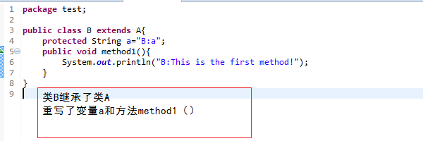
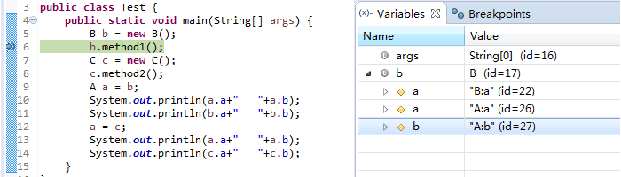
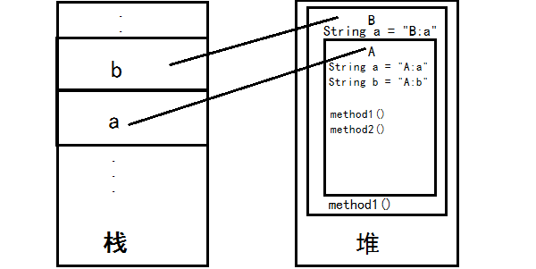

Java向上转型问题一
关键词： 向上转型 , 同名变量 ，同名方法
对象的上转型其实就是多态的一种表现。不知道大家有没有遇到这种情况！向上转型的对象访问的变量是父类原来的而不是子类重写的，但访问的方法是子类重写的！
大家都知道当向上转型的对象访问的方法是子类重写的方法（如果子类重写了父类的方法）。但为什么子类重写了父类的变量，向上转型的对象却访问的是父类的对象呢？今天我将和大家一起分析这个问题！
1. 情景再现
类A的编写
类B的编写

类C的编写
测试类的编写
大家认为会输出结果呢？我本以为A类的引用变量a会输出B、C对象重写后的变量！然而并不是这样的！！！~~~~(>_<)~~~~
测试结果
进过binge多方查找资料、询问大神，终于还是对这个问题有所认识！下面我将就我所知道的向大家解释。
2. 方法的重写与变量的隐藏
下图表示的是Debug调试过程中，当程序运行到代码的第六行时（图片左侧），对象b的详细信息（图片右侧）。
由上图知父类的属性并没有被重写而是保存了下来！！但由于子类新添了与父类相同变量名的a，所以将父类的属性给隐藏了。那既然是被隐藏了，而且我声明的是子类变量，实例化的也是子类的对象！跟父类没半毛钱关系！为什么还会产生父类的变量呢？还记得super关键词(在Java中，子类可以通过super关键字调用父类的属性和方法，包括被隐藏的。)吗？子类在执行构造方法的时候，首先会通过super（）方法实例化父类，然后才会实例本身！所以父类的属性也会产生。知道上面后，我们就该了解为啥向上转型的对象调用属性时调用的是本身的，而不是子类的！
在JVM运行.class文件时，所有的对象实例都是存放在堆内的。B的实例对象在堆内是像下图那样进行存储的。

类B的实例对象其实就是在类A的基础上添加上了自己的新属性和方法。类A的引用变量a指向的正是实例对象B中的类A的实例对象。因为父类的属性是没有被重写的，只是被子类B隐藏了，而现在类A的引用变量a指向的是出去类B新添的属性和方法，故被隐藏的属性不在隐藏，所以在测试结果中A类的引用变量访问到的变量是父类原来的。而类A的方法已被重写，故当调用方法时，会是子类重写的方法。综上知：当父类类型的引用指向子类对象时，该引用只能调用父类中定义的属性和方法。如果子类重写了父类中的方法，那么在调用该方法时，会调用子类的方法（动态链接）。属性永远是调用父类的。
关于Java虚拟机内存的介绍
OK!binge要说的也就这些了！希望大家从中有所收获，再见，下篇文章见！！^_^